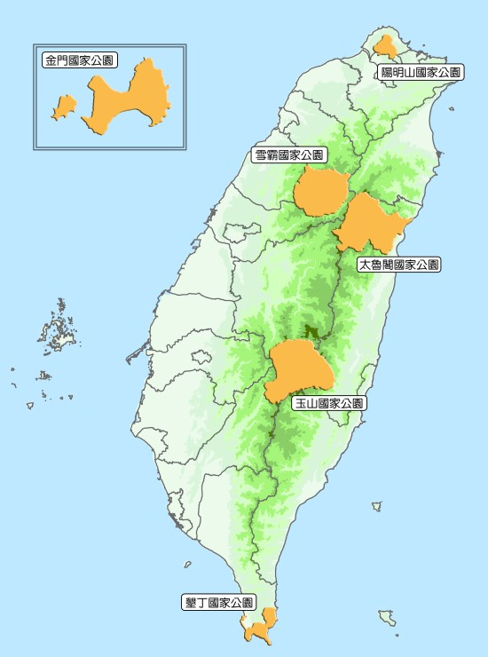

| 臺灣國家公園 | ||||||
|---|---|---|---|---|---|---|

陽明山國家公園 | 陽明山國家公園緊臨臺北都會區‧雪霸國家公園 雪霸國家公園成立於民國81年(1992)。雪霸國家公園境內高山林立，景觀壯麗，高差達三千多公尺，以雪山為中心，向四週輻射多支稜脈，但見遠近的山稜蜿蜒伸展，層次分明，地勢崇峻，其中雪山與大霸尖山最具代表性。雪山主峰位於雪山山脈的中部，高3,886公尺，為山脈之最高點，是臺灣的第二高峰，臺灣府誌因其「積雪瑩澈光明晴霽望之，輝白如玉」而名為雪山。
| |
| 陽明山國家公園 陽明山國家公園緊臨臺北都會區， 全區以大屯火山群彙為主， 因火山活動造成的錐狀與鐘狀火山體、 火口湖、硫氣孔、地熱與溫泉， 具有研究及娛樂價值，受季風影響， 植物相兼具高草原、矮草原、闊葉樹林、 亞熱帶雨林、雨水生植物群落， 孕育臺灣水韭、大屯杜鵑、蝴蝶與鳥類， 陽明山公園栽植的櫻花及杜鵑， 使本區成為臺北近郊最吸引人的賞花場所。 |
陽明山國家公園 陽明山國家公園緊臨臺北都會區， 全區以大屯火山群彙為主， 因火山活動造成的錐狀與鐘狀火山體、 <國家公br> 火口湖、硫氣孔、地熱與溫泉， 具有研究及娛樂價值，受季風影響， 植物相兼具高草原、矮草原、闊葉樹林、 亞熱帶雨林、雨水生植物群落， 孕育臺灣水韭、大屯杜鵑、蝴蝶與鳥類， 陽明山公園栽植的櫻花及杜鵑， 使本區成為臺北近郊最吸引人的賞花場所。 |
|---|